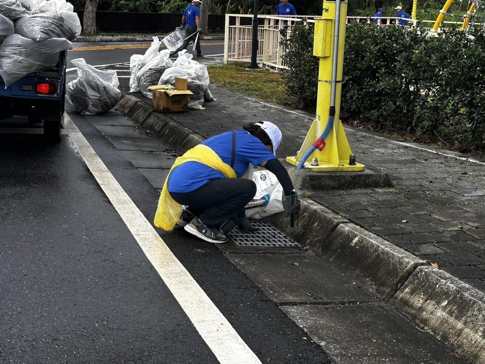

薔琵颱風過後迅速動員 花蓮環保局攜手巡守隊清理南濱海堤

可樂電子報小編/編輯
薔琵颱風過後，為降低強風豪雨帶來的垃圾及漂流物對海岸環境造成的影響，花蓮縣環境保護局積極結合海洋巡守隊，針對南濱海堤及吉安溪周邊環境展開清潔作業，全面清除岸際及周邊區域垃圾，落實污染源頭管理，避免廢棄物隨溪流及雨水流入海洋，減少海洋及沿岸環境污染，迅速還給民眾乾淨、舒適的海岸休閒空間。

環保局表示，花蓮擁有綿延壯麗的太平洋海岸線，海洋環境不僅是珍貴的自然資產，更是民眾休閒遊憩與觀光發展的重要資源。颱風過後，地表垃圾、漂流物及其他廢棄物極易隨雨水逕流進入溪流，進一步流向出海口及近岸海域，對海岸景觀與海洋生態造成衝擊。環保局持續推動海岸環境清潔與海洋污染預防，秉持「從陸域源頭減少污染、從溪流沿岸阻斷垃圾入海」的原則，以實際行動捍衛花蓮珍貴的海洋生態。

本次清潔行動除清除環境中可見的廢棄物外，更著重於「源頭截污、預防勝於清理」的整體治理理念。透過及早清除路邊排水溝及溪流沿岸可能隨雨水沖刷的垃圾，有效降低廢棄物經由河川流入海洋的風險，將防治工作提前至陸域端執行，大幅降低垃圾入海後的清理成本與生態衝擊，展現從源頭預防到沿岸清理的全面防治思維。

縣長徐榛蔚表示，海洋污染防治不能僅依賴海灘及海面上的事後清理，更必須從陸域污染源管理做起。颱風及豪雨過後，環境垃圾更容易受雨水沖刷進入溪海，及時巡查、迅速清理與跨單位在地合作至關重要。特別感謝海洋巡守隊員積極投入，透過公私協力守護地方家園。徐榛蔚也呼籲民眾前往海堤、溪流及海灘遊憩時，落實垃圾不落地與分類，如發現大量漂流垃圾請主動通報，共同打造永續宜居的美麗花蓮。